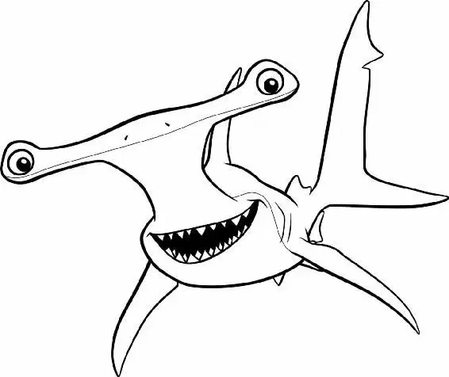

The dentist’s office was closed for the night. The tank was dark, and Nemo slept soundly in the tiki hut.
Jacques approached Nemo quietly and said, “Psst. Nemo.”
Nemo didn’t stir, so Jacques threw a small pebble at him. Still no response from Nemo. Jacques threw another pebble at him, but the little fish slept on. In frustration, Jacques threw a whole bunch of pebbles.
Nemo woke with a start.
“Follow me,” Jacques told the new fish. He led Nemo to the center of the tank, which was lit up by the red gleam of the fake lava flow.
Nemo heard a strange low chanting, then saw something moving behind the tiki heads. Bubbles, Gurgle, then Bloat surfaced from behind the heads.
Jacques and Nemo began the long climb up the face of the volcano. As he passed by Deb and Peach, Nemo was given a ceremonial whack with the kelp fronds they held.
Then, at the peak of the volcano, Nemo saw Gill floating silently.
“State your name,” Gill told Nemo.
“N-N-Nemo,” the scared fish stammered. “Brother Bloat, proceed,” said Gill. “Nemo. Newcomer of orange and white,”Bloat said solemnly. “You have been called forth to the summit of Mount Wannahockaloogie to join with us in the fraternal bonds of tankhood.”
Nemo had no idea what Bloat was saying. “Huh?” he asked.
“We want you in our club, kid,” Peach said. “If you are able to swim through… the Ring of Fire!” Bloat said dramatically.
Nemo looked around, confused.
Bloat gave Jacques a stern look and whispered to him, “Turn on the Ring of Fire.” At that moment, a wall of bubbles rose out of the volcano.
Gill motioned to Nemo to swim through the bubbles to him.
Nemo took a deep breath and closed his eyes. He hesitated, then swam with all his might. He swam through the Ring of Fire, bumping right into Gill.
Gill gave Nemo a big smile and lifted him high over his head. “From this moment on, you will now be known as Shark Bait,” he said.
“Okay.” Gill added to the rest of the Tank Gang. “Shark Bait’s one of us now, agreed?” The whole tank agreed.
“And we can’t send him off to his death. Darla’s coming in five days,” Gill said. “So we’re gonna get him outta here. We’re gonna help him escape.”
“Escape?” Nemo squeaked. “Really?”
“We’re all gonna escape,” Gill said.
All the fish laughed. “Not another one of your escape plans,” Gurgle said.
“Sorry, but they just never work,” Deb added.
“Yeah, why should this be any different?” Bloat asked.
Gill turned serious and pointed to Nemo. “’Cause we’ve got him.”
Nemo gulped. “Me?” he asked.
Gill put his fin around Nemo. “You see that filter? You’re the only one small enough to get in and out of that thing,” Gill said.
Nemo started to feel the pressure.
“What we need you to do,” Gill said, “is take a pebble inside there and jam the gears. You do that, and this tank’s gonna get filthier and filthier by the minute. Pretty soon the dentist’ll have to clean the tank himself—and when he does, he’ll take us out of the tank, put us in individual bags; then we’ll roll ourselves down the counter, out of the window, off the awning, into the bushes, across the street, and into the harbor.
“Who’s with me?” Gill asked, turning to the rest of the Tank Gang.
Everyone raised a fin in agreement, except Gurgle. “I think you’re nuts! No offense, kid, but you’re not the best swimmer,” he said.
“He’s fine. He can do this!” Gill said. “So, Shark Bait, what do you think?”
Nemo looked around at all the friends he’d made and thought about seeing his father again. “Let’s do it,” he said with a smile.
